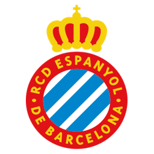
ESHistoria centenaria catalana
RCD Espanyol
1900
Año de fundación del club
Pericos / Periquitos
Una breve historia
Fundado en 1900, el RCD Espanyol es el club decano de Cataluña. Aunque nunca ha ganado LaLiga, cuenta con cuatro Copas del Rey y dos finales de la UEFA Cup / Europa League en su historial.
Fieles a los colores
de Barcelona
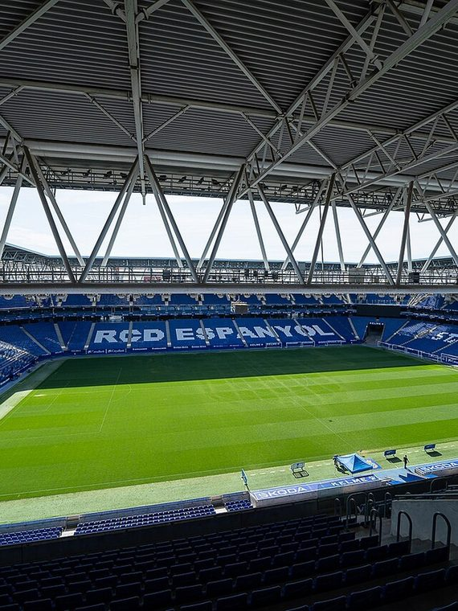
📷Foto pendiente
(espanyol-1.jpg)';" />
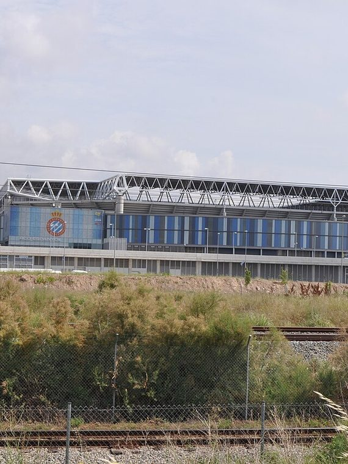
📷Foto pendiente
(espanyol-2.jpg)';" />
Títulos y logros
Vitrina de títulos
0
Copa del Rey
La rivalidad
El duelo que enciende a la afición
RCD Espanyol
VS
FC Barcelona — El Derbi Barcelonés
EstadioStage Front Stadium (RCDE Stadium)
Capacidad40,500 espectadores
CiudadBarcelona
Club fundado1900
Cómo llegar
Temporada 2026 / 27
Plantilla del primer equipo
Datos de ejemplo — reemplázalos con la plantilla real en data/teams.js.
1
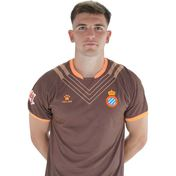
🧑';" /> Àngel Fortuño Portero
2
🧑';" />
Gorosabel
Defensa
3
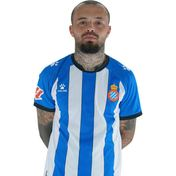
🧑';" /> Quilindschy Defensa
4
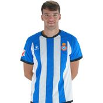
🧑';" /> Urko Defensa
5
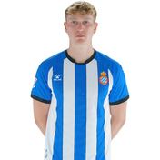
🧑';" /> Riedel Defensa
6
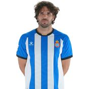
🧑';" /> Cabrera Defensa
7
🧑';" />
Puado
Centrocampista
8
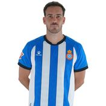
🧑';" /> Edu Expósito Centrocampista
9
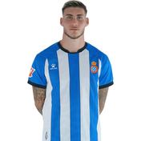
🧑';" /> Roberto Delantero
10
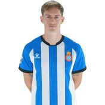
🧑';" /> Pol Lozano Centrocampista
11
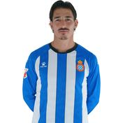
🧑';" /> Pere Milla Delantero
13
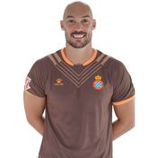
🧑';" /> Dmitrovic Portero
14
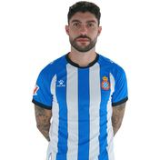
🧑';" /> Nuñez Defensa
15
🧑';" />
Bryan
Centrocampista
16
🧑';" />
Vanja
Defensa
17
🧑';" />
Jofre
Delantero
18
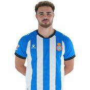
🧑';" /> Marcos Delantero
19
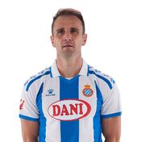
🧑';" /> Kike G. Delantero
20
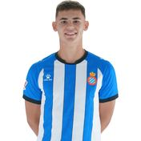
🧑';" /> G. Moscardo Centrocampista
21
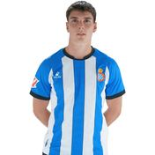
🧑';" /> R. Hinojo Defensa
22
🧑';" />
Cala
Delantero
23
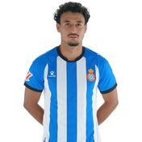
🧑';" /> El Hilali Defensa
24
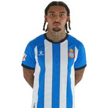
🧑';" /> Dolan Delantero
26
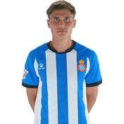
🧑';" /> Bauza Centrocampista
27
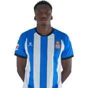
🧑';" /> Timera Defensa
28
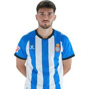
🧑';" /> Javi H. Delantero
31
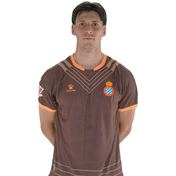
🧑';" /> Llorenç Portero
32
🧑';" />
Jose Angel
Defensa